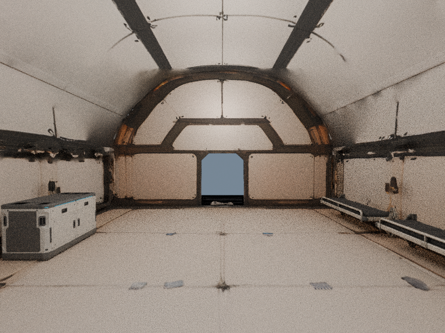
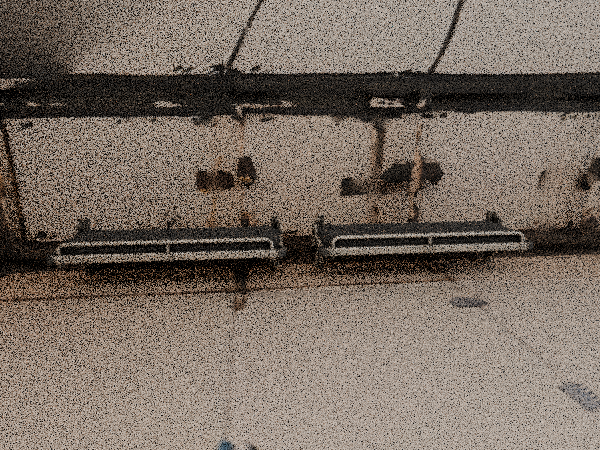
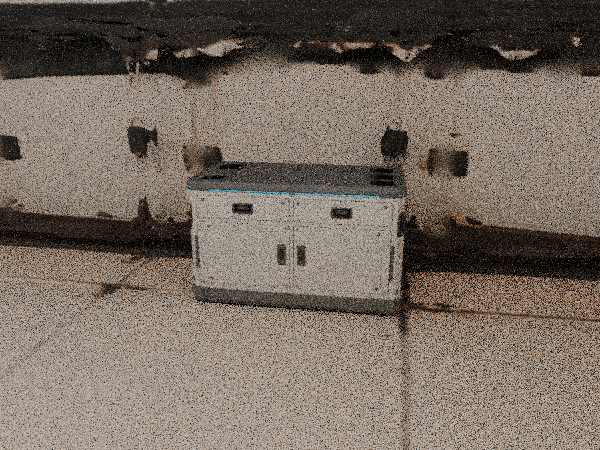
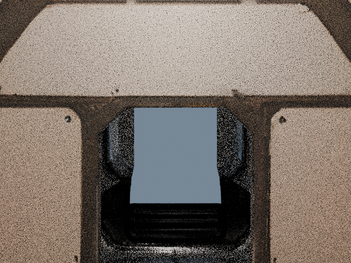
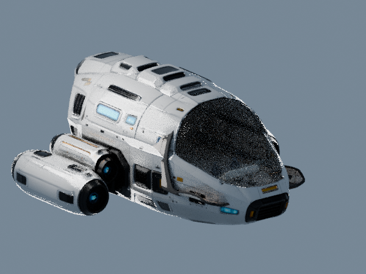

已确认的玻璃 r10 + 主结构 v7 + 主仪表台 v2 + 原双座椅 + 两件折叠床 v1 + 工作台 v1。仅整件摆放与等比缩放，当前为待审阅试装。

画面直接来自真实 GLB，保留所有试装部件和原玻璃。床使用同一个静态来源的两个实例；当前没有展开或机械动作。
仍待解决：v7 壳顶余量、前窗/主结构衔接、源地板发白及接缝粗糙。技术检查不代表整舱美术、完整碰撞或人体可达性通过。
静态图可直接审阅；3D 需通过项目开发服务打开。下载装配参数 有限检查记录




先查看上方真实模型图片。3D 开关用于显式观察来源，不代表关掉部件后的画面就是完整试装。